Начало работы
Установка
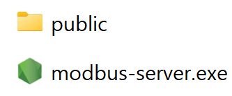
Для запуска программы вам понадобятся:
- файл modbus-server.exe
- папка public
Они должны находиться в одной папке. Если вы скачали их в архиве — обязательно разархивируйте.
Далее:
- Запустите файл modbus-server.exe
-
Откроется чёрное окно с надписью:
Server running at
http://localhost:3000/Не закрывайте это окно!
- Программа откроется в браузере автоматически. Если нет — откройте http://localhost:3000 вручную.
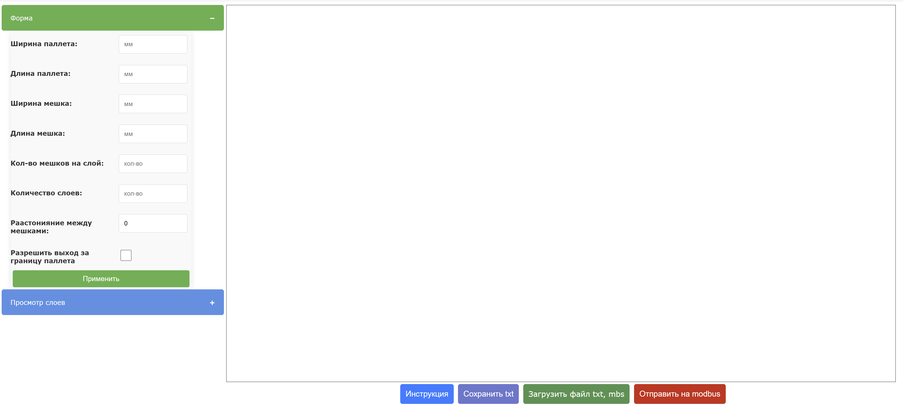
Если что-то не работает — переходите к разделу Работа с терминалом.
Важные замечания
Некоторые поля в форме можно не заполнять.
- Если поле “Кол-во мешков на слой” оставить пустым, программа подставит максимум.
- Если не указать “Расстояние между мешками” — оно будет равно 0.
Используйте Tab для перехода между полями и Enter для применения.
В форме отправки по Modbus поля “Название” и “Host” можно не заполнять. Тогда будут использоваться значения по умолчанию: modpoll1 и 127.0.0.1.
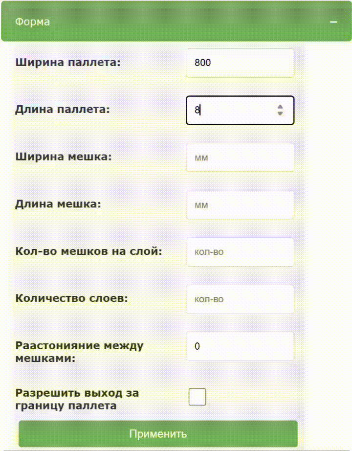
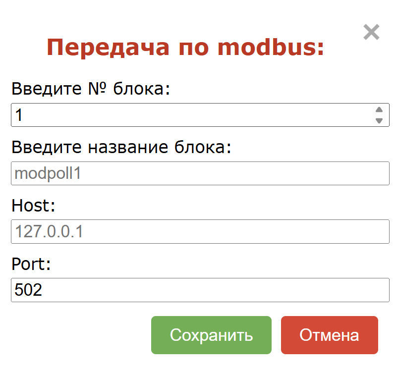
Работа с терминалом
Терминал показывает ошибки и логи. Вот основные из них
Ошибка запуска сервера: listen EADDRINUSE: address already in use ::1:3000
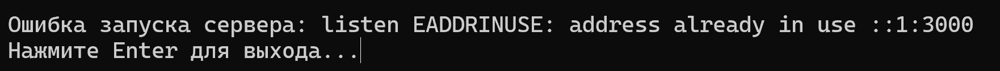
Причина: порт 3000 уже используется.
Решение: возможно, вы не закрыли прошлую сессию. Закройте её и перезапустите.
Ошибка подключения: connect ECONNREFUSED 127.0.0.1:502 / Подключение к Modbus-серверу не установлено
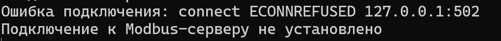
Причина: программа не может подключиться к Modbus-серверу.
Проверьте:
- запущен ли сервер
- правильны ли хост и порт Пример настройки приведён ниже на скриншоте.
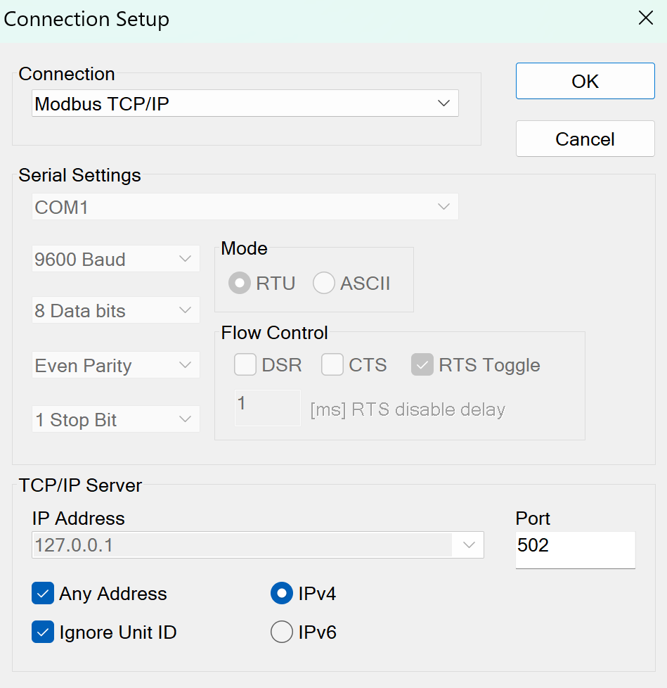
Ошибка при отправке данных: Modbus exception 2: Illegal data address (register not supported by device)
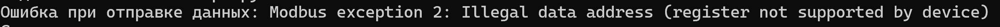
Причина: Modbus Slave неправильно настроен.
Решение: проверьте параметры конфигурации — они приведены ниже.
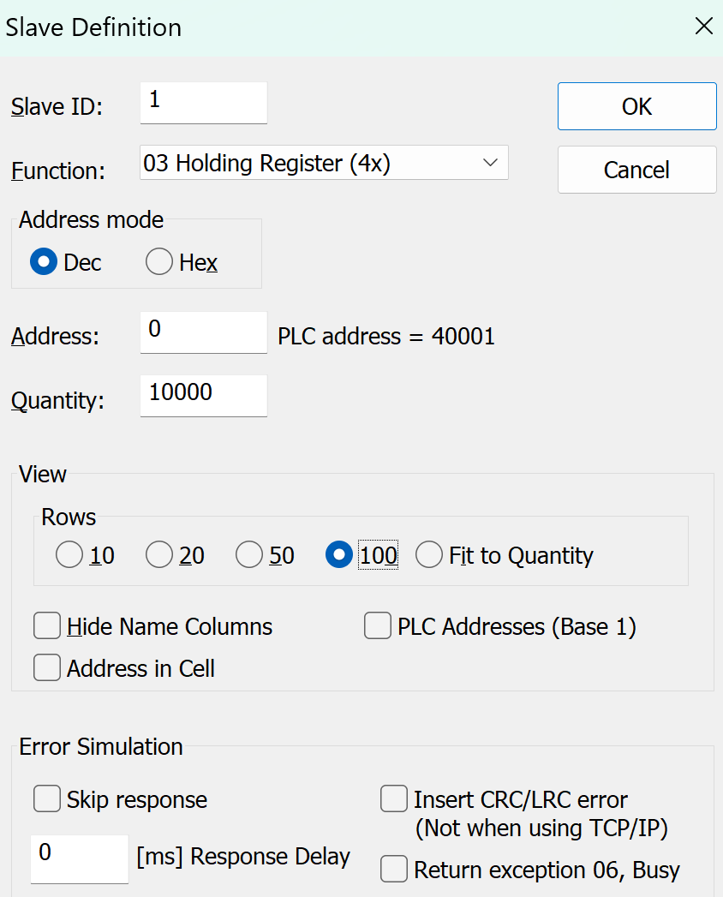
Закончить работу
Чтобы остановить программу:
-
Нажмите Ctrl+C в терминале или закройте его крестиком.
-
Закройте вкладку в браузере.
Использование
Основные функции
Основные блоки:
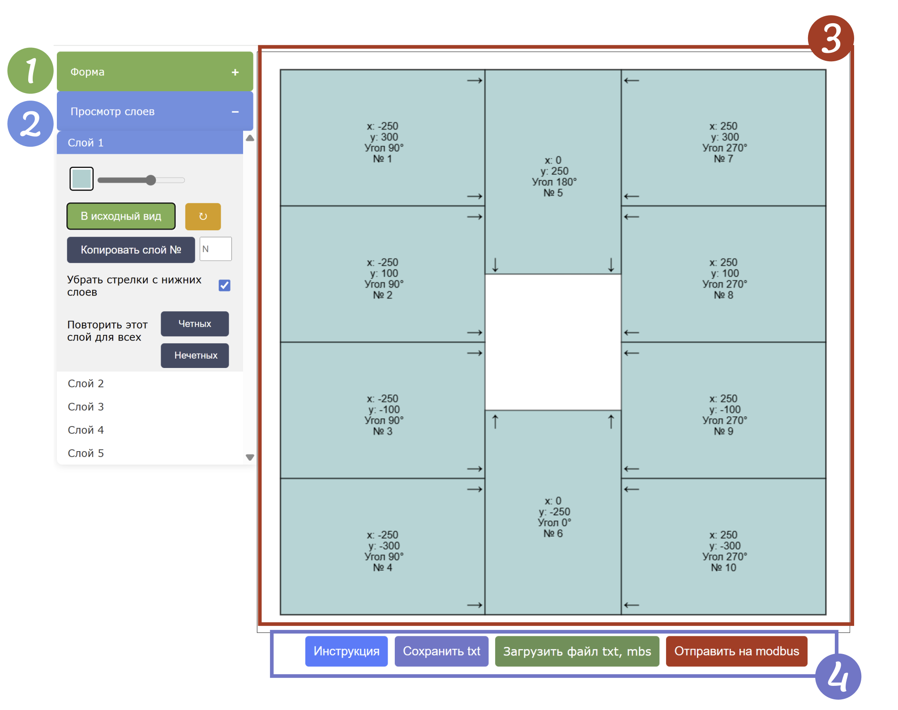
1. Форма данных — здесь вводятся размеры. Подробнее см. Важные замечания.
2. Просмотр слоёв — переключение между слоями с помощью клавиш ↑ и ↓. Также можно выбрать слой вручную. Подробнее см. Расширенные функции.
3. Работа с пакетами — перемещение, поворот и другие действия. См. Основные функции.
4. Кнопки — "Инструкция", "Сохранить", "Загрузить", "Отправить". Подробнее см. Кнопки.
Выделение и перемещение
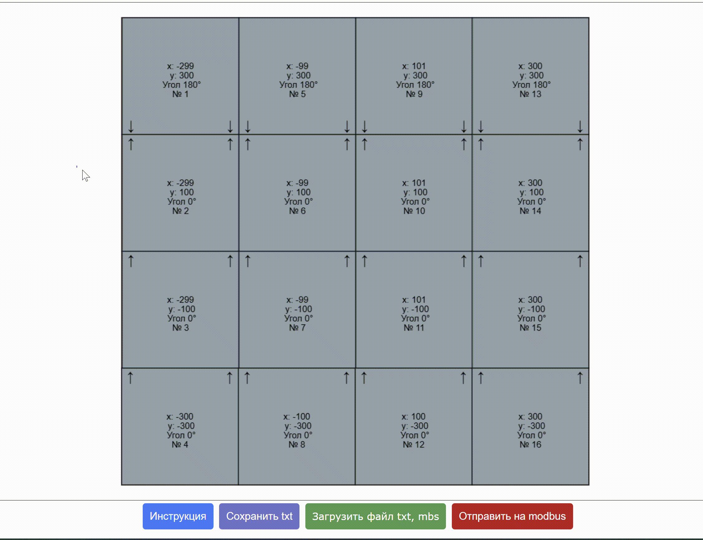
- Чтобы выделить несколько объектов — зажмите левую кнопку мыши и потяните.
- Чтобы переместить объект или группу — зажмите ЛКМ и перетащите их в нужное место.
Поворот
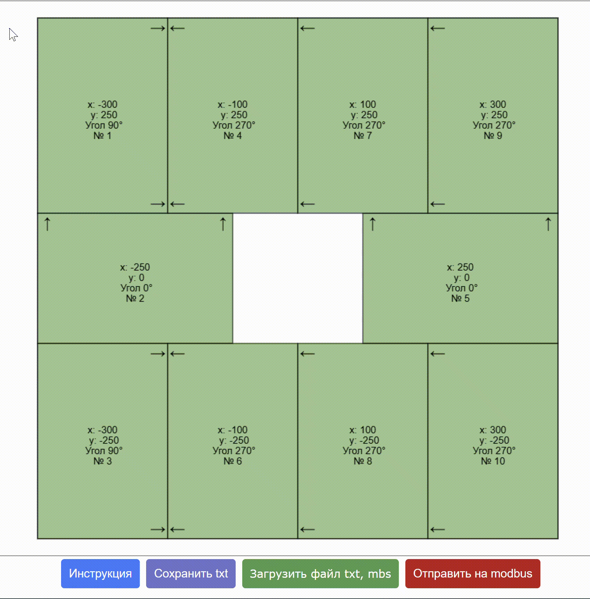
- Для поворота группы — используйте стрелки ← и → на клавиатуре.
- Для поворота одного объекта — щёлкните по нему правой кнопкой мыши.
Расширенные функции
Блоки слоя
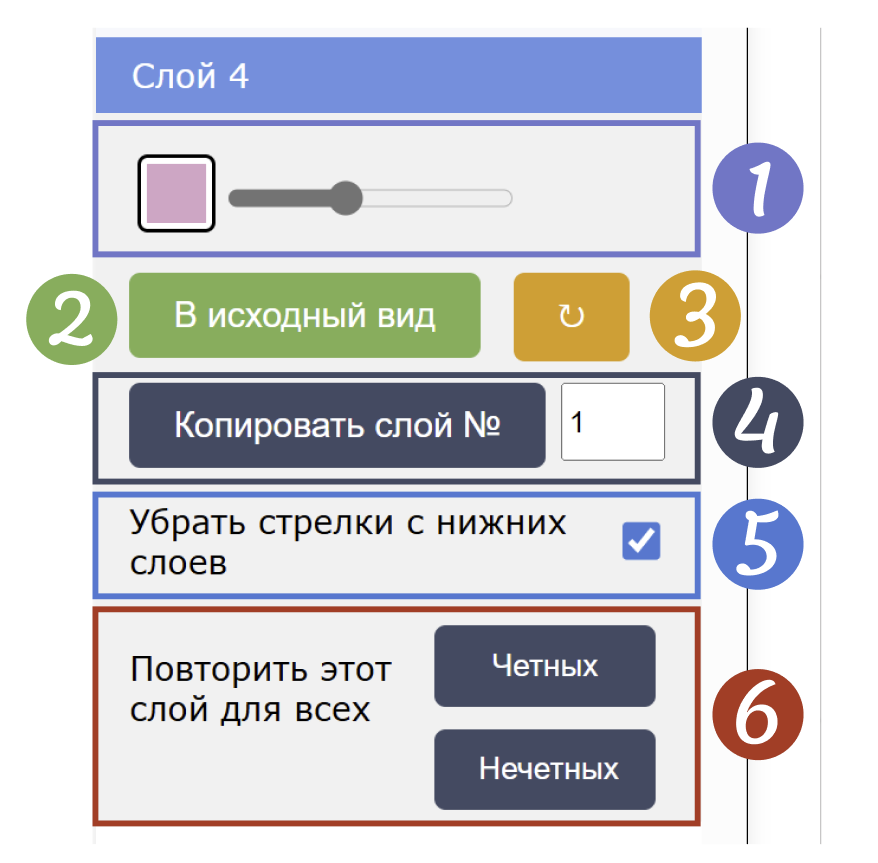
1. Цвет и прозрачность: для настройки прозрачности используйте ползунок, а для выбора цвета — кликните на квадрат с текущим цветом. См. Работа с цветом.
2. В исходный вид: кнопка возвращает слой к состоянию до всех изменений. См. В исходный вид.
3. Поворот слоя: стрелка поворачивает весь слой на 180°.
4. Копирование слоя: введите номер слоя и нажмите “Копировать слой №”. См. Копировать слой.
5. Скрытие стрелок и рамок: отключает отображение стрелок и границ текущего слоя, чтобы можно было лучше видеть нижележащие элементы. Их отображение будет в белом цвете.
6. Повтор слоя: кнопки "Чётные" и "Нечётные" дублируют текущий слой на соответствующие позиции. См. Повторить этот слой.
Работа с цветом
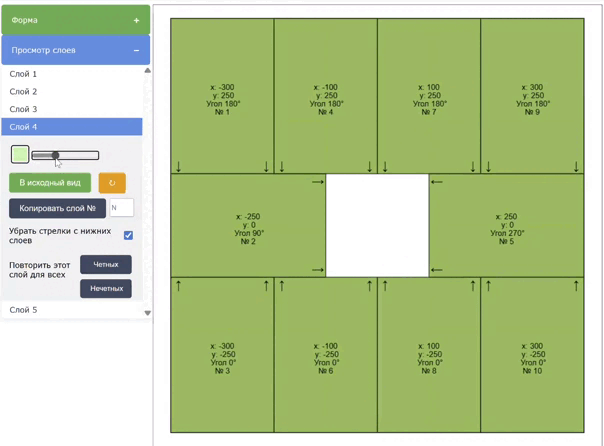
- Чтобы сделать заливку прозрачной — сдвиньте ползунок влево.
- Чтобы изменить цвет — нажмите на цветной квадрат и выберите новый цвет в палитре. Изменения отображаются сразу.
В исходный вид
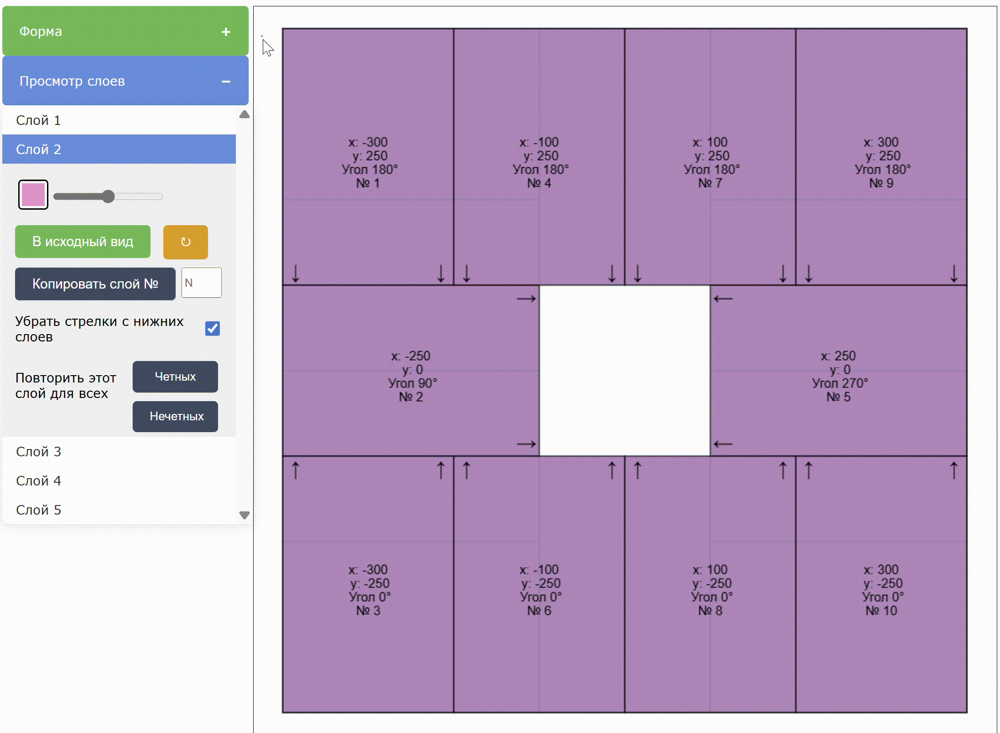
Нажмите кнопку “В исходный вид”, чтобы отменить все изменения слоя и вернуть его к исходному состоянию (как при загрузке или создании).
Копировать слой
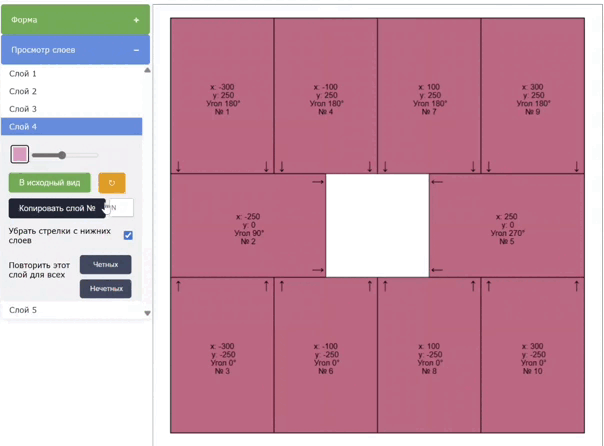
Введите номер нужного слоя и нажмите “Копировать слой №”, чтобы дублировать его содержимое.
Повторить этот слой
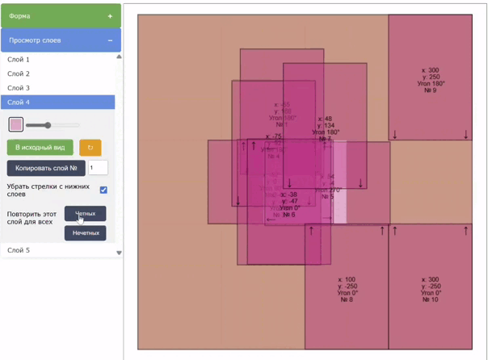
Нажмите “Чётные” или “Нечётные”, чтобы скопировать текущий слой на все чётные или нечётные позиции соответственно.
В правом верхнем углу появится уведомление о том, какие слои были изменены.
Кнопки
Все окна которые открываются при нажатии на кнопку, можно закрыть кликнув в любом месте на экране.
Сохранение
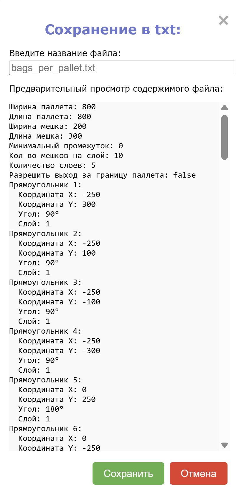
-
Нажмите кнопку “Сохранить”.
-
Откроется окно предпросмотра — введите название файла и подтвердите.
Загрузка
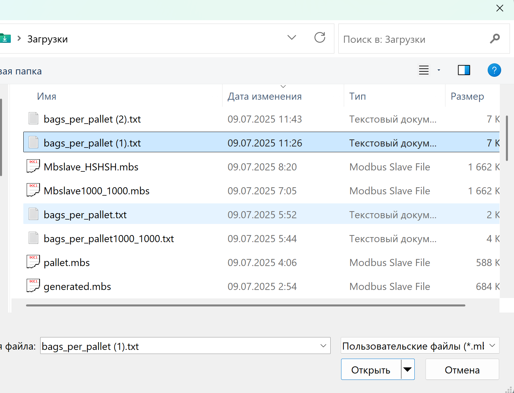
-
Выберите .txt или .mbs файл.
-
После загрузки вы увидите файл в интерфейсе или предупреждение об ошибке в правом вверхнем углу.
Отправка
-
Открывается форма для ввода данных.
-
Можно отправить без ввода — подставятся значения по умолчанию.
-
После отправки появится сообщение об успехе или ошибке.
Для подробностей смотрите работа с
терминалом.